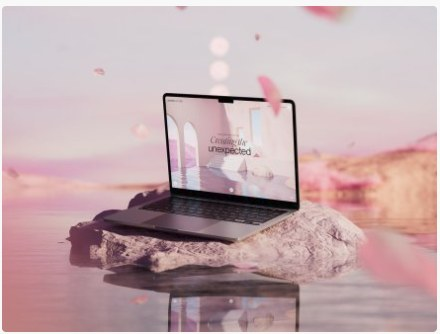
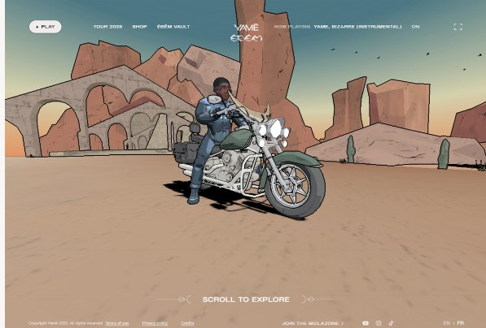
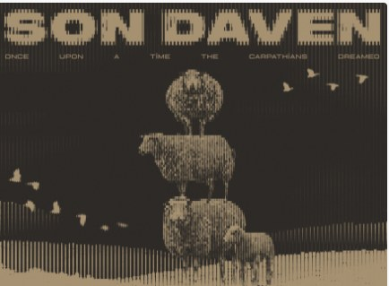
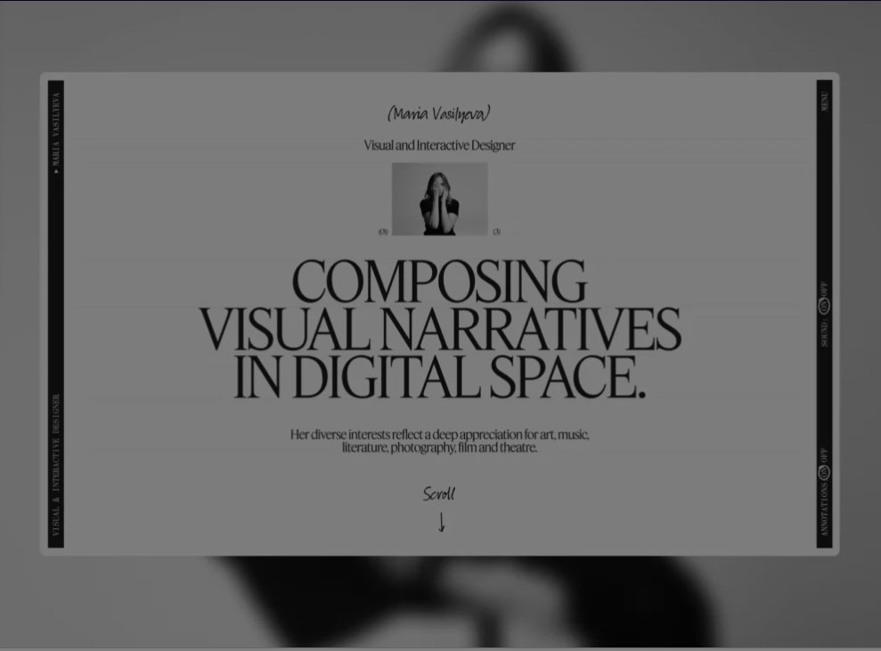
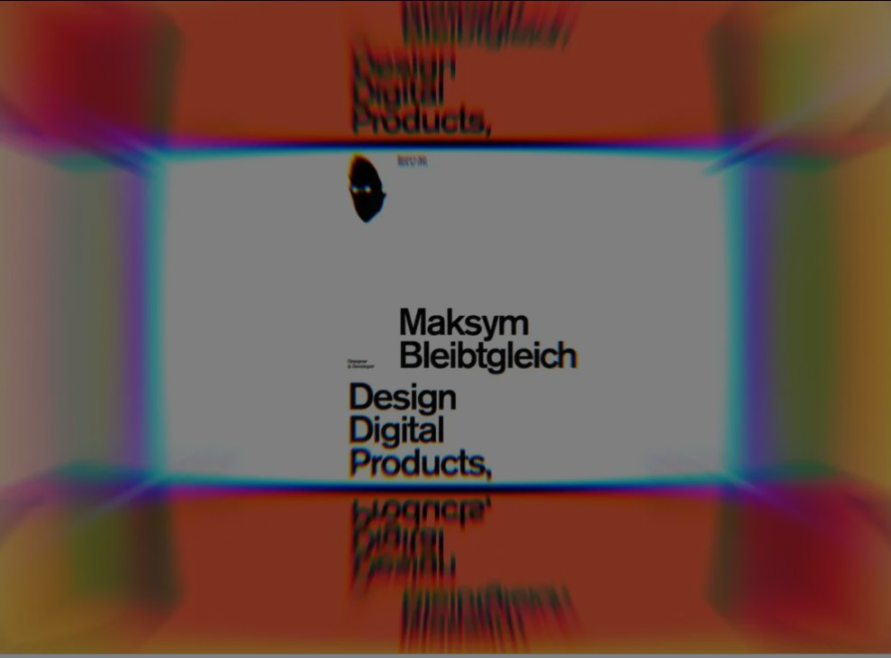
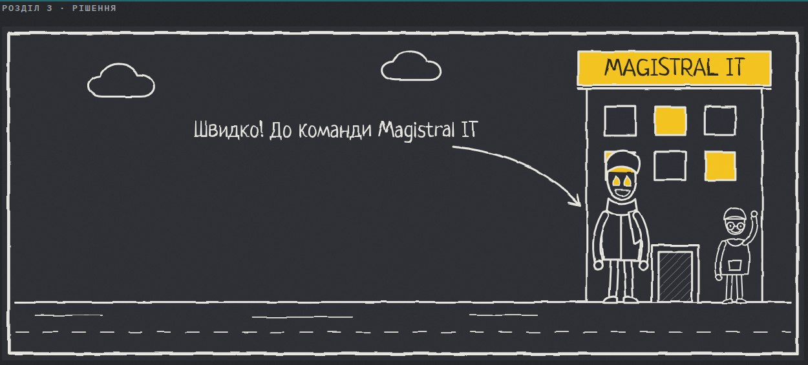
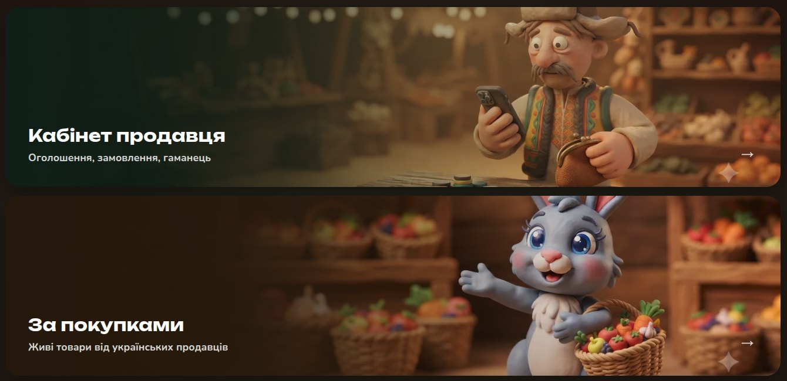
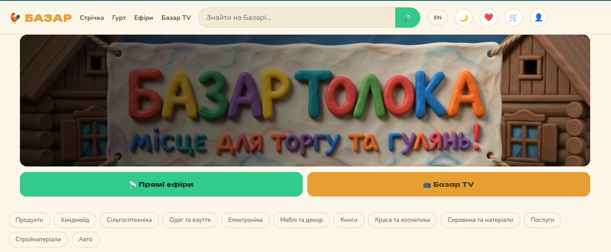
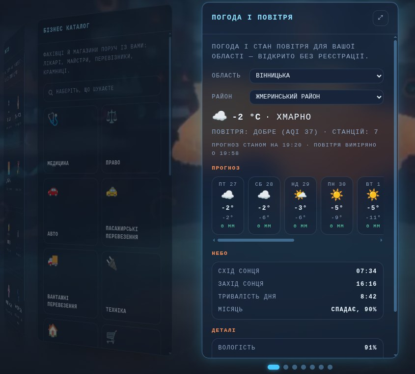

Trends 2027
Web design trends 2027: five directions and what a small business should take
Before every new year the trend lists arrive. We collected expressive websites, most of them awarded in 2023–2026, read researchers, design reviews and the studios’ own accounts, and sorted it all into five directions. Each one carries our verdict for a small business: take, consider or skip.
This is a forecast, not a rule. The year next to an example shows when the site received an award or was written about: some techniques appeared earlier and are carrying over into 2027.

1. Drawn by hand
When software can produce a smooth picture in a minute, work that shows a human hand stands out. In April 2026 Nielsen Norman Group described the handmade look as a new signal of trust. Envato reports that by late 2026 searches for hand-drawn assets on its platform had grown by 25%.



A business does not need a whole drawn world. Start small: your own illustrations, a handwritten signature, real photos of your team and your place. Keep in mind the Nielsen Norman Group warning: a warm look should not hide what the product really is. This is an expert assessment based on examples, not the result of an experiment. We drew our own site in pencil, so we are not entirely neutral here.
Verdict: take it. One recognisable style of your own is worth more than a ready-made template.
2. Big expressive type
A headline half a screen tall becomes the picture itself. The agency Webyansh reviewed the home pages of 75 sites from Awwwards and 75 software service sites: letters of 80 pixels or more on the first screen appeared on 41% of the former and 19% of the latter. The sample is small, but the direction is visible.




Big type works when the phrase is short and says what you offer. Make the headline real text, not a picture: then search engines and screen readers can read it.
Verdict: take it. An inexpensive way to look current, if you have something to say in one sentence.
3. Motion that explains
Animation is useful when it shows how something works or where to look next. On its website the anime.js library takes a mechanism apart, and each part is labelled with a feature.

Webyansh advises using motion with a clear purpose and avoiding custom mouse cursors on business sites. One more rule: if a person has turned animation off in the device settings, the site should respect that.
Verdict: take a little. One animation that explains your product beats ten decorations.
4. Full-screen photo and video
Here the site speaks in frames: a face, a gesture, an object up close. There is little text, and the mood is clear at once.


The technique rests on the quality of the footage. Full-screen stock shots look borrowed, and heavy video slows the page down on a phone.
Verdict: consider it. Use it if you have good footage of your own and have checked the speed on an ordinary phone.
5. 3D and game worlds
The most spectacular group: you walk through the site, spin objects, sometimes play. A telling example is Oryzo, a site for an invented cork coaster, with which the studio Lusion shows off its craft.


According to Webyansh, mobile pages using the popular 3D library Three.js have a median weight of 4.47 MB against 2.56 MB across all sites, and a performance score of 34 against 48. An exception may be a product the buyer really needs to rotate or configure.
Verdict: skip it. For a small business this is usually expensive and heavy. Try it only to show a product in three dimensions.
What the studios themselves say
We read how the authors of several of these sites explain their work. Their budgets are different, but the lessons suit a modest site too.
- Content first, effect second. In the story of the watch lab, Immersive Garden rejects 3D for its own sake: technology should step back behind the story. Resn explained a complex product through a story and a guide character instead of jargon.
- Restraint. Lusion writes that for Oryzo it deliberately toned down the dramatic motion so as not to overwhelm people. In the studio’s view, the premium feel comes when all sections belong to one world.
- Phones from day one. BUNQ LABS tested Why Zero on a four-year-old budget Android, and that phone could veto decisions. Immersive Garden also designed for mobile from the very start.
- Weight. The source 3D scenes of Why Zero weighed about 1.5 GB, and the finished site about 10 MB. The authors of the Yamê site got under 7 MB by compressing models and textures. On the Inkfish site, video on the work cards loads only on hover, and phones get separate versions.
- Explore first. The DashDigital team went through several concepts before choosing one for Inkfish. BUNQ LABS won the Why Zero project with a working prototype built in 48 hours.
- AI cannot do everything. At Immersive Garden, early generated imagery was too inconsistent, so most of the final work was done by traditional means.
For a small business this means something simple: first decide what a person has to understand, show a draft, test it on an inexpensive phone, and only then add decoration.
What the pictures do not show
- Accessibility. In the EU, accessibility requirements for a range of digital products and services have applied since 28 June 2025. Check separately whether they cover you.
- Speed. According to the Web Almanac 2025 as cited by Webyansh, only 48% of mobile sites pass Google’s core page quality metrics.
- AI agents. They already use websites on people’s behalf. Nielsen Norman Group advises clear button labels, predictable navigation and correct page structure.
Our forecast for 2027
So far we have looked at other people’s examples. Now, what we think ourselves.
The trend will be what feels alive
We expect as much of the real and the human as possible. It may sound strange, but AI will help here: it makes it ever easier to take familiar, homely motifs and carry them into a new space. A fair, a village house, plasticine or a pencil drawing become the interface of a website or an app.
We are not alone in thinking so: Envato describes 2027 design as the human hand combined with AI polish, and in its motion forecast names stop motion and hand-drawn animation among the directions. There is one condition: behind the picture there must be your idea, your selection and a real product.
Fabric and form as a wrapper
Our second assumption: websites will start to “dress” the product. Folds, transparency, the texture of cloth and the flowing line of a silhouette, above all a woman’s, will become the wrapper for cosmetics, perfume and clothing. The screen will convey a sense of touch.
Fashion already shows the signal: a review of the Spring 2027 collections notes sheer fabrics and pronounced textures. That this language will move to websites is so far only our forecast.
You can try it without complex graphics: your own close-up photos of fabric, a short light video, drawn folds. Photograph adult models with their consent, do not smooth skin into plastic, and make sure text and buttons stay easy to read.
What we are already doing




Our style may seem odd for some markets. We accept that: being recognisable matters more to us than looking like everyone else. Before entering a new country, such a style is worth testing on people there.
In short
- Take: a handmade style of your own and a large, clear headline.
- Take a little: motion that explains something.
- Consider: full-screen photo and video.
- Skip: 3D worlds you do not need.
- Our forecast: the living and human with the help of AI, and in beauty and clothing the language of fabric and form.
Award-winning sites are made to impress. Yours should help a person understand the offer and get in touch. The examples are shown for discussion, and the rights to the images belong to their authors. If you own an image and want it removed, write to us and we will take it down.
Let's go through your case
Tell us what your business does. We will draw a sketch of an app for it, with no calls and no obligations.